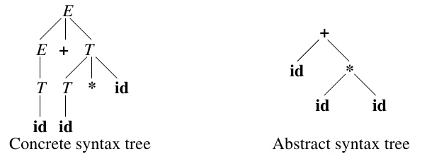

Abstract Syntax Tree
AST design evolves together with the whole compiler
- AST = Abstract Syntax Tree
- Serves as main data structure for all post-parsing phases of the compiler
- AST should be concise while also flexible enough for all post-parsing phases
- Not uncommon to revisit and change the initial AST design
Concrete vs Abstract
- Concrete syntax trees show every detail of the parsing process
- Show the structure and organization of the grammar
- Also called parse tree
- Abstract syntax trees instead only preserve the important structural information of the input program

AST Design and Construction
- There are different things to consider when designing an AST:
- It should be possible to unparse the AST
- Execution of AST shall reflect the execution of the original program
- AST nodes need to contain sufficient information to recall the essential elements they represent
- Implementation of AST should be decoupled from information represented within the AST
- Using accessors
- Different phases of the compiler view elements of the AST fundamentally different
- There is no single class hierarchy that can describe AST nodes for all purposes
- Usage of the AST by the different phases is facilitated by various phase-specific interfaces implemented by AST nodes
- Going from source language \(L\) to a grammar and AST design:
- Create unambiguous grammar for \(L\)
- There can be certain production rules only for the purpose of removing ambiguity from the grammar
- Create AST from the grammar
- Grammar details for disambiguation are not part of the AST design
- Semantically useless symbols and punctuation such as
,or;are also discarded
- AST is constructed by adding semantic actions into the grammar
- Design different phases of the compiler
- Each phase might add new requirements to the AST design
- Grammar/AST design might be revisited
Left and right values
- When an
identifieris used, it can mean either- The value associated with that name
- The location (address) where that value is stored
- The meaning depends on the context where the identifier is used
x = y
The identifier
yrefers to the value ofy- This is also called right value (R-value) because it is to the right
= - An object’s self reference (this) is typically only available in right-value form
- This is also called right value (R-value) because it is to the right
The identifier
xrefers to the location ofx, not the its value- Also called left value (L-value)
- Some languages allow for using R-values in place of L-values (for example with dereference operator)
- In C:
*emeans the R-value ofeis used as an L-value - Other languages, like Java, limit L-values to reduce the ability to change storage unintentionally
Design Pattern for ASTs
- Class hierarchy for the AST is kept relatively flat
- Node management is placed into a common superclass
AbstractNode- Each type of node (assignment, if, while) is then a simple extension of
AbstractNode
- Each type of node (assignment, if, while) is then a simple extension of
Visitor Pattern
- ASTs for languages like Java have \(\approx50\) different node types
- Compilers like GCC have \(\approx200\) different passes
- To handle this we can make use of the visitor pattern
- Each pass can be in its own visitor class
TODO: Example
References
- Crafting A Compiler, Chapter 7.4 by Fischer et al.